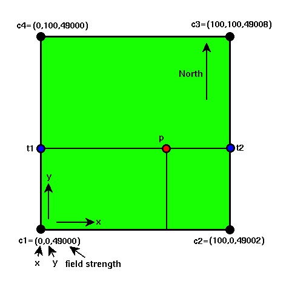

Correcting for Main Field Variations
Corrections for spatial variations in the strength of the Earth's main magnetic field are referred to as geomagnetic corrections. One commonly used method of accounting for these variations is to use one of the many models of the Earth's main magnetic field that are available. One such set of commonly used models of the main field is referred to as the International Geomagnetic Reference Field (IGRF).
The IGRF models are regularly updated to account for secular variations. Given the latitude and longitude of some point on the Earth's surface, the total field strength of the Earth's main magnetic field can be calculated.
Consider a small two-dimensional survey. A plan view of such a survey is shown underneath. One commonly used method of applying the main field correction is to linearly interpolate the computed values of the main field at the corners of the survey throughout the survey region. These interpolated values can then be subtracted from the field observations. After applying this correction, you are left with that portion of the magnetic field that can not be attributed to the Earth's main magnetic field. 
This two-dimensional application of linear interpolation is only slightly more complex than the one-dimensional linear interpolation used to reduce our gravity observations. Values of the Earth's main magnetic field are first determined from the IGRF for each corner point of the survey (c1, c2, c3, c4). To determine the strength of the main field at the point p, we first perform two linear interpolations up the edges of the survey in the y direction to determine the values of the field at the points t1 and t2. That is, first determine the value of the Earth's main magnetic field at the point t1 by linearly interpolating between the points c1 and c4. Then determine the value of the main field at the point t2 by linearly interpolating between the points c2 and c3. Now, linearly interpolate in the x direction between t1 and t2. The result is the two-dimensionally interpolated value of the field at the point p*.
*There is no reason why I have chosen to first interpolate in the y direction and then interpolate in the x direction. I could have first interpolated in the x direction between c1 and c2 and then between c3 and c4.